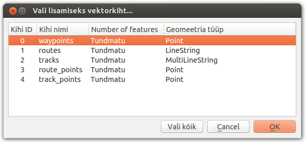

Uurimistöö jaoks ruumiandmete salvestamine kõrgtehnoloogilisi abivahendeid kasutades
Välitöödel puid puurides on oluline salvestada asukoht ja kellaaeg. Selleks sobib suurepäraselt globaalse positsioneerimissüsteemi vastuvõtja ehk geps.
Nagu doktor Kristina hiljuti tõestas, on ta omandanud peaaegu täielikult oskused karmides välitingimustes gepsu käsitleda ja puu-puurimiste asukohti seadmega salvestada.
Olulise märkusena tuleb aga välja tuua, et punkti salvestamise äraunustamine mõjub teadustöö tõsiseltvõetavusele negatiivselt.
Selles peatükis vaatame, kuidas jõuavad punktid gepsust arvutisse
Kasutada on järgmised kõrgtehnoloogilised abivahendid:
- geps
- personaalarvuti
- USB-kaabel
Toimi järgnevalt:
- Lülita arvuti tööle, kui see veel ei tööta
- Ühenda kaabel gepsu ja arvuti vahele
- Kui geps küsib, kas sa soovid minna massilisse lattu (Mass Storage), siis vajuta kindlalt ja ühekordselt nupule jah (Yes)
- Ava failihaldur
- Liigu asukohta GARMIN/Garmin/GPX/
- Vali kataloogist vajalikud failid (antud juhul siis kristina_puurib1.gpx ja kristina_puurib2.gpx) ja kopeeri need töölauale
- Võid nüüd kaabli lahti ühendada
Avame GPX failid programmis QGIS
-
Käivitame programmi QGIS
-
Lisame seadmest kopeeritud GPX-failid kihtidena kaardile: Kiht -> Lisa vektorkiht
-
Avanevas aknas vali nupp "Ava", määra failitüübiks "GPS eXchange Format...", vali Töölaualt mõlemad failid, vajuta "Open" ja veelkord "Open"
-
QGIS küsib millist kihti importida, vali mõlema faili puhul "waypoints" ja vajuta "OK"

Loome uue tühja vektorkihi vajalike atribuutidega
-
Vali menüüst Kiht -> Uus -> Uus Shapefaili kiht ...
-
Avanenud aknas määra tüübiks "Punkt", projektsiooniks EPSG:4326 - WGS 84, kustuta vaikimisi olev "id" atribuut,
lisa uued tekstitüüpi atribuudid "name", "type" ja "time". Vajuta "OK".
Salvestusaknas sisesta failile nimi ("kristina_puurib") ja vajuta "Save"
Kopeerime punktid kahest GPX failist uude shapefaili kokku
-
Vali kihtide paneelist "kristina_puurib" kiht ja lülita sisse redigeerimisrežiim
-
Vali kihtide paneelist esimene "waypoints" kiht ja vali "Vali nähtusi nelinurgaga" tööriist
-
Tõmba hiirega kast üle kõikide punktide kaardil. Valitakse aktiivse kihi kõik punktid.
-
"Ctrl+C" kopeerib punktid lõikepuhvrisse.
-
Kihtide paneelil vali kiht "kristina_puurib" ja vajuta "Ctrl+V". Punktid kleebitakse uuele kihile.
-
Korda sama asja teise "waipoints" kihiga
-
Salvesta kihi muudatused
Teeme valiku punktidest atribuutandmete põhjal
-
Vali kihtide paneelist "kristina_puurib" kiht ja ava päringuaken
-
Valime ainult need punktid, mille atribuut "name" algab täheühendiga "TR".
-
Selleks sisestame päringuakna lahtrisse Lausend järgmise päringu: name like 'TR%'. Kinnitame päringu nupuga "Vali" ja "Sulge" sulgeb päringuakna
-
63 punkti on valitud
Salvestame valiku uue failina
-
Kihtide paneelil kihi "kristina_puurib" peal tee paremklikk ja vali avanevas menüüs "Salvesta valik nimega..."
-
Avanevas aknas: Formaat "ESRI Shapefile", määra faili nimi nupust "Ava", nimeks näiteks "kristina_puurib_valik.shp"
-
Salvesta kiht vajutades nupule "OK". Ongi õiged punktid ühes failis koos :)
-
Ava failihaldur, liigu töölauale, vali töölaualt kõik failid, mille nimi on "kristina_puurib_valik", parema kliki menüüst vali "compress..." ja paki failid zip-arhiiviks
Kaardil tulemuse nägemiseks toimi järgnevalt:
-
Ava kaart
-
Ava failihaldur, tiri töölaualt just loodud zip-fail kaardi peale. Ongi kõik.
Kasutatud failid allalaadimiseks: